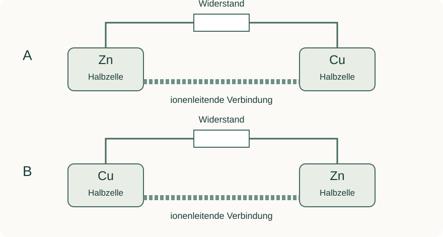

Informieren
Erklärung und Beispiel öffnen
Anode und Kathode benennen die Reaktion an einer Elektrode: An der Anode findet Oxidation statt, an der Kathode Reduktion. Diese Definitionen gelten unabhängig davon, wo eine Elektrode gezeichnet ist. Minuspol und Pluspol beschreiben dagegen die relative elektrische Polung der beiden Zellanschlüsse.
Bei einer entladenden galvanischen Daniell-Zelle oxidiert Zink: Zn → Zn²⁺ + 2 e⁻. Zink ist deshalb die Anode und der Minuspol. An Kupfer werden Cu²⁺-Ionen reduziert: Cu²⁺ + 2 e⁻ → Cu. Kupfer ist die Kathode und der Pluspol. Die chemische Reaktion liefert die Energie für den äußeren Elektronentransport von Zn zu Cu.
| Zuordnung | Zinkelektrode | Kupferelektrode |
|---|---|---|
| Reaktion | Oxidation | Reduktion |
| Elektrodenname | Anode | Kathode |
| Pol | Minus | Plus |
| Elektronen außen | werden abgegeben | werden aufgenommen |
Die technische Stromrichtung im äußeren Leiter zeigt entgegengesetzt zum Elektronenfluss, also vom Plus- zum Minuspol. Beide Pfeile dürfen deshalb nicht ohne Beschriftung nebeneinanderstehen. Die Regel „Anode = Minus“ ist auf den hier betrachteten galvanischen Betrieb begrenzt; bei Elektrolyse ändern sich die Polzuordnungen, nicht die Definitionen der Elektrodennamen.
Beim Spannungsmessen gilt: Anzeige = Potential am roten V-Anschluss minus Potential am schwarzen COM-Anschluss. Vertauschte Messleitungen ändern das Anzeigevorzeichen; sie kehren nicht von selbst die Zellreaktion um.
A · Links und rechts sind keine Elektrodennamen
Beide Skizzen zeigen dieselbe entladende Daniell-Zelle in anderer Anordnung. Die Lösungen gehören jeweils zum darüber genannten Metall.

- Ordne in beiden Skizzen Anode, Kathode, Plus- und Minuspol zu. Begründe über die Teilreaktionen.
- Zeichne je einen beschrifteten Pfeil für Elektronenfluss und technische Stromrichtung im äußeren Leiter.
- Ein Voltmeter wird jeweils rot an die linke und schwarz an die rechte Elektrode angeschlossen. Welches Vorzeichen erwartest du in A und B?
Hilfe 1
Beginne mit dem Stoffumsatz an Zn und Cu. Die Reaktion ändert sich nicht, wenn du den Aufbau spiegelst.
Hilfe 2
Zn bleibt Anode und Minuspol. In A liegt der rote Anschluss also am niedrigeren, in B am höheren Potential.
Musterlösung
A: links Zn = Anode/Minus, rechts Cu = Kathode/Plus. Elektronen fließen außen von links nach rechts, die technische Stromrichtung von rechts nach links. Rot an Zn und Schwarz an Cu ergibt eine negative Anzeige.
B: rechts Zn = Anode/Minus, links Cu = Kathode/Plus. Elektronen fließen außen von rechts nach links, die technische Stromrichtung von links nach rechts. Rot an Cu und Schwarz an Zn ergibt eine positive Anzeige.
In beiden Fällen lautet die Anodenreaktion Zn → Zn²⁺ + 2 e⁻ und die Kathodenreaktion Cu²⁺ + 2 e⁻ → Cu. Die räumliche Anordnung beeinflusst die Benennung nicht.
B · Eine fehlerhafte Erklärung prüfen
Zu einer Daniell-Zelle steht: „Kupfer ist die Anode, weil es der Pluspol ist. Die Elektronen bewegen sich vom Kupfer durch die Fritte zum Zink. Wenn man die Messleitungen vertauscht, oxidiert anschließend Kupfer.“
- Ersetze jede falsche Aussage durch eine richtige und begründe sie.
- Transfer auf Papier: In einer gegebenen galvanischen Zelle wird Eisen zu Fe²⁺ oxidiert und Ag⁺ zu Silber reduziert. Ordne Elektrodennamen, Pole und äußeren Elektronenfluss zu; stelle die Gesamtreaktion auf. Diese Zelle wird nicht als im Unterricht durchgeführter Versuch vorausgesetzt.
Hilfe 1
Trenne Reaktionsname, elektrische Polung, Transportweg und Messrichtung. Die gegebene Teilreaktion reicht im Transfer zur Zuordnung aus.
Hilfe 2
Oxidation bedeutet Anode, im galvanischen Betrieb Minuspol. Ein Fe-Atom liefert zwei Elektronen; deshalb werden zwei Ag⁺-Ionen benötigt.
Musterlösung
Kupfer ist in der Daniell-Zelle die Kathode, weil dort Cu²⁺ reduziert wird; im galvanischen Betrieb ist es der Pluspol. Elektronen fließen außen von Zink zu Kupfer. Die Fritte ermöglicht Ionenleitung, keinen Elektronentransport durch die Lösung. Das Vertauschen der Messleitungen ändert nur das Messvorzeichen, solange Aufbau und Betriebsart gleich bleiben.
Im Transfer ist Eisen die Anode und der Minuspol: Fe → Fe²⁺ + 2 e⁻. Silber ist die Kathode und der Pluspol: 2 Ag⁺ + 2 e⁻ → 2 Ag. Der äußere Elektronenfluss verläuft von Fe zu Ag.
Fe + 2 Ag⁺ → Fe²⁺ + 2 Ag
Die Elektrodennamen folgen den angegebenen Reaktionen. Eine konkrete Zellspannung ist zur Lösung dieser Zuordnungsaufgabe nicht nötig.
Zurück zur Checkliste
Kannst du den Punkt jetzt an einer eigenen Erklärung oder einer neuen Aufgabe nachweisen? Ordne dich ein: sicher (selbstständig), teils (mit Hilfe) oder offen (noch Lernbedarf). Notiere bei Bedarf, was du noch klären möchtest.
Fachliche Quellen und Modellgrenzen
Eigene Lerntexte, Aufgaben, modellhafte Daten und Abbildungen. Fachliche Grundlagen:
Die Beispiele verwenden vereinfachte Metall/Metallionen-Systeme. Reale Beobachtungen hängen auch von Konzentration, Oberfläche, Zeit und Nebenreaktionen ab.